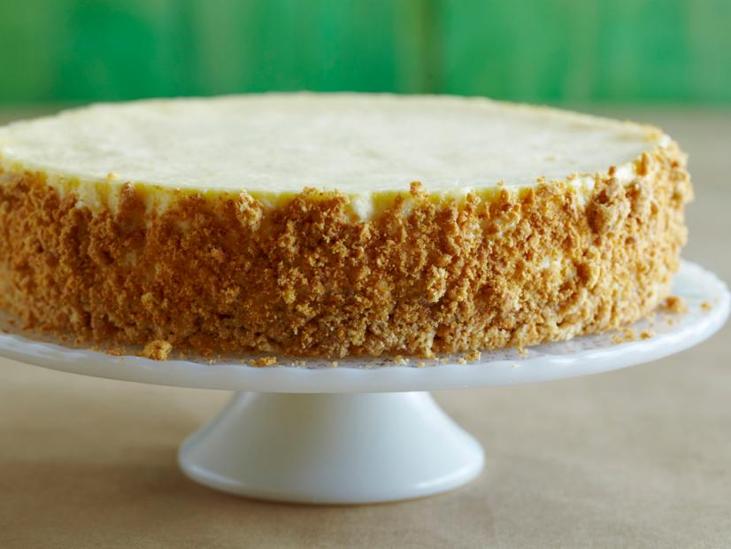

Sour Cream Cheesecake

Description
This recipe, courtesy of Alton Brown and The Food Network, will make
your loved ones cream themselves with ecstasy!
Ingredients
Crust:
- 33 graham cracker squares, crumbled
- 4 ounces (1 stick) unsalted butter, melted, plus additional, for brushing the
the pan
- 1 tablespoon sugar
Filling:
- 20 ounces cream cheese
- 1 1/4 cups sour cream
- 1 cup sugar
- 1 tablespoon vanilla extract
- 2 eggs
- 3 yolks
- 1/3 cup heavy cream
Steps
- Preheat oven to 300 degrees F. Brush some of the melted butter around a 9 by
3-inch cake pan. Adhere parchment to the bottom and the sides.
- In a small bowl, combine crumbled graham crackers, the remaining melted butter,
and 1 tablespoon of sugar. Press 2/3 of the mixture into the bottom of the
parchment-lined pan. Place remaining crumbs on a sheet pan and bake both the
crust and the remaining mixture for 10 minutes. Cool. Reserve additional crumb
mixture for sides.
- In a mixer with a paddle attachment, beat sour cream for 10 seconds. Add the
cream cheese and sugar and mix on low for 30 seconds and then turn up to medium.
Scrape the bowl.
- In a separate container, combine vanilla, eggs, yolks, and heavy cream. With the
mixer on medium, slowly pour the liquid mixture in. When half of it is
incorporated, stop and scrape. Continue adding the mixture until the rest of the
ingredients are incorporated. Once completely combined, pour into the cooled
crust.
- Lower oven temperature to 250 degrees F. Place cheesecake into a preheated water
bath, in the oven for 1 hour. Turn the oven off and open the door for one minute.
Close the door for one more hour. Remove the cheesecake from the water bath and
place in the refrigerator for 6 hours to completely cool before serving.
- When ready to serve, place the entire cake pan into a hot water bath for about 15
seconds. Unmold onto a cake round or serving dish. Take the remaining graham
cracker mixture and press into the sides of the cake.
- To slice, place your knife into a hot water bath and wipe dry each time you make
a pass through the cake.